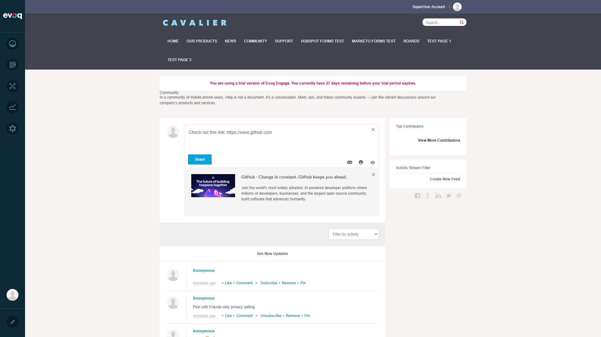

Test Case 1: Preview Valid URL PASS
Objective: Verify that a valid URL generates a rich preview with title, description, and image.
Steps:
- Navigate to Community page with Activity Stream
- Click on "Tell the world something..." input
- Type: "Check out this link: https://www.github.com"
- Observe URL preview generation

GitHub URL generates rich preview with image, title, and description

Post published showing URL preview in feed
Observations: URL preview correctly displays:
- Image: GitHub promotional image
- Title: "GitHub - Change is constant. GitHub keeps you ahead."
- Description: Full meta description from the page